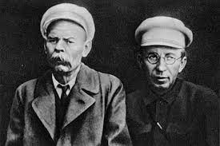

Антон Семёнович Макаренко
Биография
Антон Макаренко – преподаватель, вошедший в четверку специалистов, определивших способ педагогического мышления в XX веке. Правда, заслуги мужчины признали уже после смерти талантливого учителя. Впрочем, для самого Макаренко это не играло большой роли.
Нашедший собственное призвание, Антон Семенович посвятил большую часть жизни перевоспитанию трудных подростков. Бывшие ученики, испытавшие на себе новаторские методы Макаренко, добились заметных успехов и написали немало книг, посвященных деятельности педагога.
Детство и юность
1 апреля 1888 года в семье работника железнодорожной станции, расположенной в городе Белополье Сумского уезда, родился первенец. Счастливые родители назвали ребенка Антоном. Вскоре после сына у супругов Макаренко появились еще один мальчик и девочка. Увы, младшая дочь умерла еще в младенчестве.
Старший Антон тоже рос болезненным. Хилый мальчик не участвовал в общих дворовых забавах, предпочитая проводить время с книгами, которых в доме Макаренко было достаточно. Несмотря на должность разнорабочего и маляра, отец будущего педагога любил читать и привил эту особенность детям.
Замкнутость и близорукость, заставляющая Антона носить очки, сделали мальчика непопулярным среди ровесников. Над мальчиком часто и жестоко издевались. В 1895 году родители отдали ребенка в двухклассную начальную школу, учеба в которой давалась Антону легко. Образ всезнайки не прибавил ребенку в глазах сверстников авторитета.
Когда мальчику исполнилось 13, семья перебралась в город Крюков, чтобы дети Макаренко могли продолжить образование. Антон поступил в Кременчугское 4-классное городское училище, которое закончил с отличием и похвальными грамотами.
В 1904 году Антон впервые задумывается о будущей профессии и поступает слушателем на педагогические курсы, после окончания которых получает право преподавать в начальной школе.
Педагогика
Первыми учениками Макаренко стали дети города Крюкова. Но почти сразу Антон осознает, что знаний для работы недостаточно. В 1914 году молодой человек поступает в Полтавский учительский институт. Параллельно с приобретением новых знаний Антон много времени посвящает писательской деятельности. Первый свой рассказ - «Глупый день» - Макаренко отправляет Горькому.
В ответ писатель присылает Антону письмо, где безжалостно критикует произведение. После провала Макаренко 13 лет не предпримет попыток написать книгу. Но отношения с Горьким педагог будет поддерживать на протяжении всей жизни.
Развивать собственную систему перевоспитания мужчина начал в трудовой колонии для несовершеннолетних правонарушителей в селе Ковалевке, расположенном рядом с Полтавой. Макаренко внедрил методику, при которой трудные подростки делились на группы и самостоятельно обустраивали быт. Своеобразная коммуна привлекла внимание властей, но новость об избиении детей (Макаренко один раз ударил воспитанника) лишила педагога должности.
Найти новую работу преподавателю помог Горький. Писатель посодействовал переходу Макаренко в колонию, расположенную рядом с Харьковом, и посоветовал вновь попытаться создать литературное произведение.
В новом заведении Антон Семенович быстро установил уже проверенные порядки. Под руководством мужчины трудные подростки стали изготавливать фотоаппараты «ФЭД». Параллельно с новостями о новаторских методах Макаренко в свет выходят три произведения педагога: «Марш 30 года», «ФД — 1» и «Педагогическая поэма».
И снова представители власти, внимательно следящие за педагогом, прекратили преподавательские эксперименты. Макаренко перевели в Киев на должность помощника начальника отдела трудовых колоний.
Осознав, что вернуться к любимому делу уже не позволят, Макаренко посвящает себя написанию книг. Нашумевшая «Педагогическая поэма» обеспечила мужчине место в Союзе советских писателей. Спустя год на имя бывшего преподавателя приходит анонимка. Макаренко обвинили в критике Сталина. Антон Семенович, предупрежденный бывшими сослуживцами, успел перебраться в Москву/
В столице мужчина продолжает писать книги. В соавторстве с женой Макаренко заканчивает «Книгу для родителей», где подробно описывает собственный взгляд на воспитание детей. Антон Семенович утверждает, что ребенок нуждается в коллективе, который поможет адаптироваться в социуме. Не менее важна для человека возможность свободной реализации.
Следующим условием гармоничного развития стала трудовая деятельность – воспитанники Макаренко самостоятельно зарабатывали на собственные нужды. Позже произведение, как и многие остальные творения Антона Семеновича, экранизируют. Уже после смерти педагога на экраны выйдут фильмы «Поэтическая поэма», «Флаги на башнях» и «Большие и маленькие».
Личная жизнь
Первой любовью Макаренко стала Елизавета Федоровна Григорович. К моменту встречи с Антоном женщина уже была замужем за священником. К тому же возлюбленная была старше избранника на 8 лет. Знакомство молодых людей организовал муж Елизаветы.
В 20 лет Антон плохо ладил со сверстниками и даже помышлял о самоубийстве. Чтобы спасти душу юноши, священник вел с Макаренко долгие беседы и также привлек к разговорам Елизавету. Вскоре молодые люди поняли, что влюблены. Новость ошарашила всех. Старший Макаренко выгнал сына из дома, но Антон не бросил возлюбленную.
Как и Макаренко, Елизавета получила педагогическое образование и вместе с любимым работала в колонии имени Горького (колония в селе Ковалевке). Роман продолжался 20 лет и закончился по инициативе Антона. В письме брату педагог заявил, что в Елизавете проснулись «атавизмы старой поповской семьи».
Женился Макаренко в 1935 году. С будущей женой педагог познакомился на работе – Галина Стахиевна работала инспектором Наркомнадзора и приехала в колонию с проверкой. Женщина воспитывала сына Льва, которого Антон Семенович усыновил после регистрации брака.
Отдавая все свое время воспитанникам, Макаренко так и не стал отцом. Зато заменил родителя пасынку и племяннице Олимпиаде – дочери младшего брата. Виталий Макаренко, с юности служивший в белогвардейском полку, вынужден был бежать из России. На родине осталась беременная жена. После рождения племянница полностью перешла под опеку педагога. На родине осталась беременная жена. После рождения племянница полностью перешла под опеку педагога.

Смерть
Умер Макаренко 1 апреля 1939 года при странных обстоятельствах. Мужчина, возвращавшийся из Дома отдыха писателей в Подмосковье, опаздывал на электричку. Антона Семенович ждали в издательстве с новыми готовыми статьями о принципах воспитания. Вбежав в вагон, Макаренко упал на пол и больше не очнулся.
Официальная причина смерти – сердечный приступ. Ходили слухи, что в Москве Макаренко должны были арестовать, поэтому педагог не выдержал напряжения. Вскры тие показало, что сердце талантливого воспитателя повреждено необычным образом. Орган принимает подобный вид, если в организм попал яд. Но подтверждение отравления найдено не было.
Макаренко похоронили на Новодевичьем кладбище. Советские газеты разместили на страницах некролог, где упомянули Антона Семеновича как заслуженного писателя. О педагогической деятельности мужчины не напечатали ни слова.
Библиография
- 1932 – «Мажор»
- 1932 - «Марш 30 года»
- 1932 – «ФД-1»
- 1935 – «Педагогическая поэма»
- 1936 – «Методика организации воспитательного процесса»
- 1937 – «Книга для родителей»
- 1938 – «Честь»
- 1938 – «Флаги на башнях»
- 1939 – «Лекция о воспитании детей»
Цитаты
Ваше собственное поведение - самая решающая вещь. Не думайте, что вы воспитываете ребенка только тогда, когда с ним разговариваете, или поучаете его, или приказываете ему. Вы воспитываете его в каждый момент вашей жизни, даже тогда, когда вас нет дома. Ваше собственное поведение - самая решающая вещь. Не думайте, что вы воспитываете ребенка только тогда, когда с ним разговариваете, или поучаете его, или приказываете ему. Вы воспитываете его в каждый момент вашей жизни, даже тогда, когда вас нет дома.
Для воспитания нужно не большое время, а разумное использование малого времени. Для воспитания нужно не большое время, а разумное использование малого времени.Для воспитания нужно не большое время, а разумное использование малого времени. Коллектив - не толпа. Опыт коллективной жизни есть не только опыт соседства с другими людьми, через коллектив каждый член его входит в общество.
Если с человека не потребовать многого, то от него и не получишь многого. Если с человека не потребовать многого, то от него и не получишь многого. Если с человека не потребовать многого, то от него и не получишь многого. Если с человека не потребовать многого, то от него и не получишь многого.
Коллектив - не толпа. Опыт коллективной жизни есть не только опыт соседства с другими людьми, через коллектив каждый член его входит в общество. Коллектив - не толпа. Опыт коллективной жизни есть не только опыт соседства с другими людьми, через коллектив каждый член его входит в общество.
Ваше собственное поведение - самая решающая вещь. Не думайте, что вы воспитываете ребенка только тогда, когда с ним разговариваете, или поучаете его, или приказываете ему. Вы воспитываете его в каждый момент вашей жизни, даже тогда, когда вас нет дома. Ваше собственное поведение - самая решающая вещь. Не думайте, что вы воспитываете ребенка только тогда, когда с ним разговариваете, или поучаете его, или приказываете ему. Вы воспитываете его в каждый момент вашей жизни, даже тогда, когда вас нет дома.